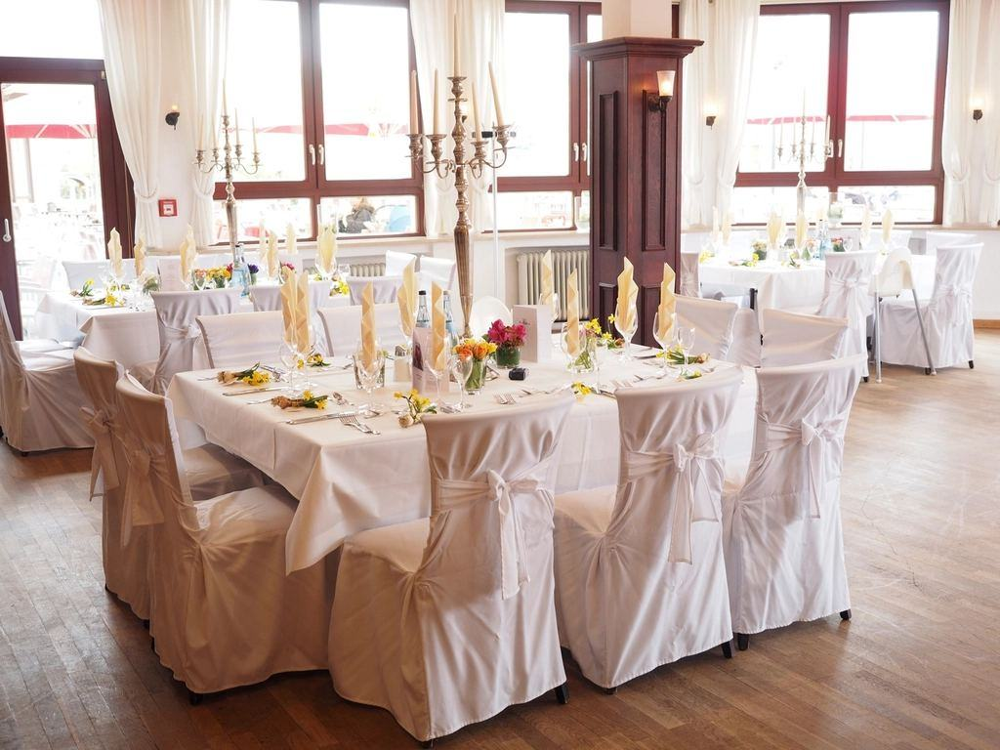
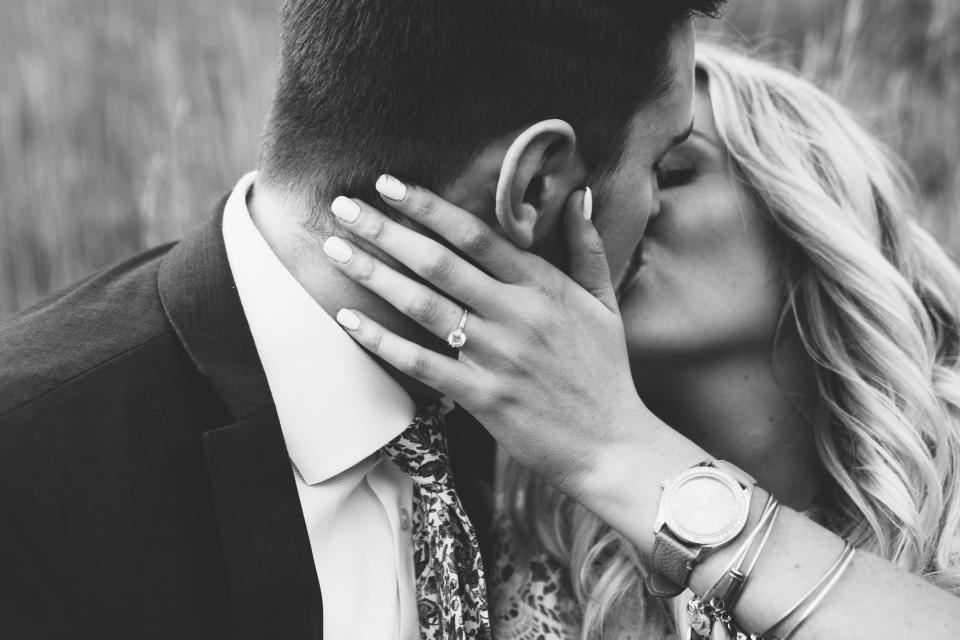

Portfolio
Ett urval av bröllop vi har fotograferat – från små vigslar till stora fester.
- 2025

Sofia & Ahmed
Vigsel på klipporna och middag i det gamla sillsalteriet.
- 2025

Linnea & Oskar
Långbord i växthus och dans till ett blåsband.
- 2025

Hanna & Mira
Borgerlig vigsel på fästningen och porträtt i solnedgången.
- 2024

Erik & Julia
Båttransfer, regnjackor och den bästa festen på hela säsongen.
- 2024

Amira & Johan
Rådhuset, Haga och middag på en bakgårdsrestaurang.
- 2026

Ella & Viktor
Bokat för juni – vigsel vid fyren.


Brudparen om oss
Det säger brudparen
Sofia A. · Käringön”De var två men kändes som gäster. Vi har bilder från vigseln där man ser min pappa gråta – det hade vi aldrig fått annars.”
Erik L. · Smögen”Jonas körde oss till en ö vi aldrig hört talas om för porträtten. Bästa tjugo minuterna på hela dagen.”
Hanna & Mira · Marstrand”Galleriet kom efter tre veckor och albumet är det finaste vi äger.”